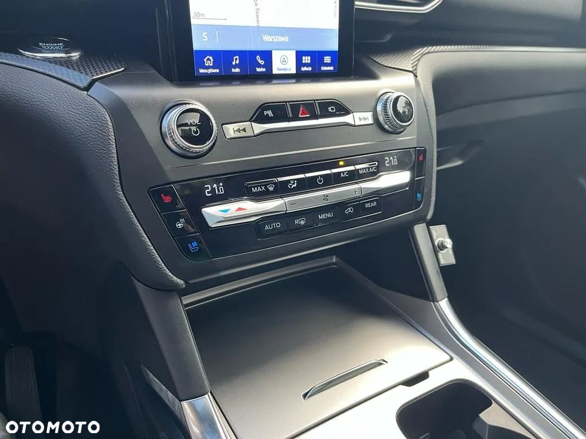
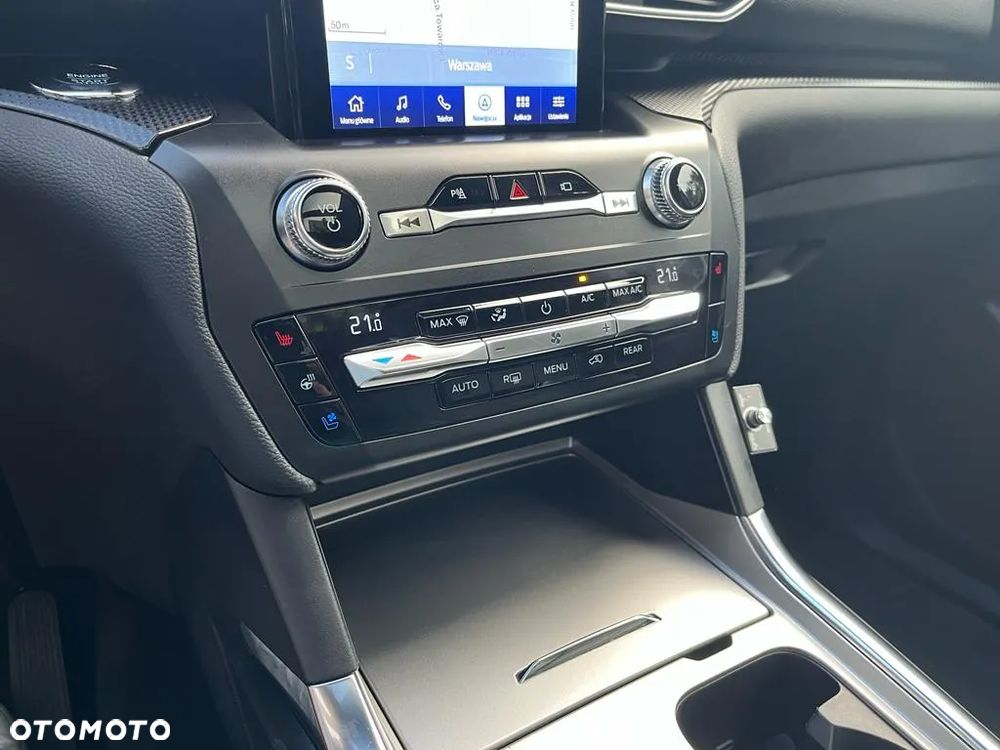

Auto sprowadzone i naprawione przez Autodiscover.
Explorer ST, 2020 r. ,Prawdziwe ST Performance z rynku Amerykańskiego. Nie jest to europejska wersja ST Line Plug-In (otomoto nie posiada właściwej opcji do wyboru) przebieg 41000 km.
Świeżo po wymianach: świece, filtry, oleju w silniku, skrzyni i napędach.
Pełne możliwe wyposażenie. Użytkowany prywatnie od ponad 2 lat.
Do przejęcia leasing EFL.
Rata 3250 brutto, GAP w racie, do spłaty 17 rat + ostatnia wykupowa ok 12000 brutto.
Odstępne 155000 brutto.
Ubezpieczony do października 2025.
Dwa komplety opon, hak.
Auto można wykupić z leasingu, odstępne + kapitał ok. 193000 brutto
Możliwa zamiana na coś ciekawego.
 
